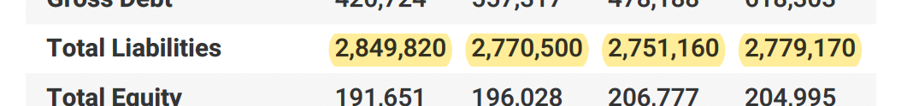
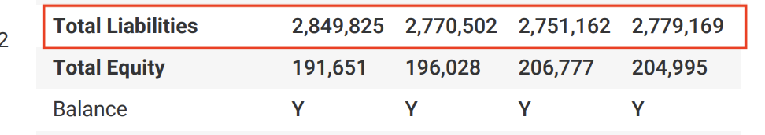

前言：問題
公司 Saas 平台做的財務報表，因為報表在最後需要顯示 balance “Y”，而有時財務人員在檢查過數字後但在報表呈現上還是顯示”N”的問題。
另外也在顯示報表數字時也發現，若有多位數時，尾數的部分有可能不精準，開始 debug 的路程。

| Total Liabilities | SME-report (wrong) | xlsx （correct) |
|---|---|---|
| YTD (current year) | 2,849,820 | 2,849,825 |
| FY22 (current year - 1) | 2,770,500 | 2,770,502 |
| FY21 (current year - 2) | 2,751,160 | 2,751,162 |
| FY20 (current year - 3) | 2,779,170 | 2,779,169 |
正文
Debug 過程：不斷地 print log。
原本以爲是 code 在運算時錯誤導致寫入 db 的數字錯誤。
Trace code log: figure correct
DB data: figure wrong
到寫入 db 的前一刻，都是正確的數字，我便開始懷疑起會不會是資料庫的問題？
追到此 Table dataType: Float
Float 可以存幾個位數？ -> 有效位數七位數。
剛好我的報表數字跑掉就是在七位數的尾數！
而使用在財務報表這種精準的數字上最好使用Decimal
Decimal 可以儲存 1~65 位數，適合需要精準數字的儲存，銀行存款/財務報表都很合適。
Mysql 使用 Decimal 之後，在專案裡面的 code 也要做相對應的調整，因為公司使用 Python，Python 有 Decimal 的類別，將 Decimal 存放在 Json 裡時也要做特別的轉換才可以用 API 打出去。
原本打出去的 APIreturn response因為 Decimal 的關係要改為return json.dumps(response, use_decimal=True)
它會將 objec 改成 string
接收端的 API 從原本直接接收 json 改成先接收 string, 再改成 json object.
即為 response.data 改成 JSON.parse(response.data);
1 | xxx.then((res) => { |
結果

資料來源：
[Mysql] 資料型態 int, float, double, text, char, varchar, blob 大小